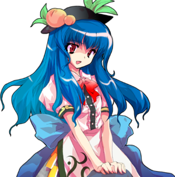

- Welcome to Touhou Wiki!
- Please register to edit. For assistance, check in with our Discord server or IRC channel.
Tenshi Hinanawi
Tenshi Hinanawi çinanai tẽɕi (♫) Tenshi Hinanai | |
|---|---|
|
Tenshi Hinanawi in Antinomy of Common Flowers Girl of the Sphere of Neither Perception nor Non-PerceptionMore Character Titles | |
| Species | |
| Abilities |
Manipulation of earth, identification of one's spirit (Sword of Hisou) |
| Occupation | |
| Location | |
Music Themes | |
| |
Appearances | |
| Official Games | |
| |
| Print Works | |
| |
| Music CDs | |
| |
Tenshi Hinanawi (比那名居 天子 Hinanawi Tenshi) is the main antagonist of Scarlet Weather Rhapsody. She's the "Eldest Daughter" (総領娘 souryou musume) of the Hinanawi clan, as referred to by Iku Nagae, that resides in Heaven. Being in heaven, she has a rather carefree life which she considers boring.
General Information[edit]
Tenshi first appeared in Reimu Hakurei's scenario as the final boss of the fighting game Scarlet Weather Rhapsody and was a recurring final boss for most other characters; she's also an unlockable playable character. She later appeared as a target in Double Spoiler, was a background character in Hopeless Masquerade and was one of the Final Day bosses in Impossible Spell Card. Like some other characters, Tenshi was left out of Symposium of Post-mysticism because "they have nothing to do with Kanako, Hijiri or Miko".[1]
Personality[edit]
In her official profile, Tenshi is described as being "sheltered upbringing", selfish and top of the world. Despite being a celestial, she is very earthly who lacks charisma. That's not surprising, however, because she became a celestial only because the entire Hinanawi family became celestials when the Nawi became divine spirits. Therefore, she lacks awareness of what it means to be a celestial.
She is described as "delinquent". An overly privileged environment had a negative effect on her playful nature. She doesn't consider what her actions mean to other people. She also has absolute confidence in her abilities, and gets mad if someone insults them. ZUN described her as having a rather nice personality.[1]
Ability, Strength & Possessions[edit]
Although it's not because Tenshi has undergone special training, she is extraordinarily strong and tough. This toughness is to the extent that she cannot be pierced by Sakuya Izayoi's knives[2]. This seems to be an effect of heavenly peaches; when one eats them, it forges one's body to one's convenience. Heaven doesn't have normal food apart from the peaches, so all celestials probably eat these peaches and strengthen their bodies. Her weapons also include innumerable danmaku keystones of various sizes and her shape-shifting Sword of Hisou.
- Manipulating the Earth
Earthquakes, land subsidence, landslides, etc. - her effective range is narrow, but she is able to manipulate them at will. It is similar to Suwako Moriya's "creating kun (the Earth)", but Suwako's ability is mainly for the sake of constructing various geographical features and creating countries, whereas Tenshi's ability is mainly a power to calm and cause (land-related) natural disasters. Since she is also able to handle the keystone, by this, she is able to calm and cause powerful earthquakes.
- Identifying one's spirit (Sword of Hisou)
The Sword of Hisou is a tool that nobody other than celestials can use.
Even with just the keystone and the Sword of Hisou, she would still probably still be able to manipulate all three of "sky, earth and people". The Sword of Hisou has power related to "sky" and "people", and the keystone has power related to "Earth". In her moves in the games, by pouring spirit into the Earth using the Sword of Hisou, she caused earthquakes and land subsidence, but for the keystone, there were pretty much only moves that used it for throwing, hitting, smashing, and as a seat, ways that not at all related to earthquakes (however, in Touhou Hisoutensoku, a move was added which used the keystone to cause earthquakes).
As the keystone was originally for calming earthquakes, if the keystone, which stores distorted energy of the Earth, was ever removed or destroyed, then an earthquake occurs. Since causing earthquakes in this manner takes time and is difficult to use in battle, that is probably the reason it wasn't used in battle.
On the other hand, as there was a move which fired a laser made of spirit from the keystone and not from the Sword of Hisou, it might be better not to consider its performance in the game too deeply.
Character Basis[edit]
Name[edit]
Her full name is Tenshi Hinanawi (比那名居 天子). In Tenshi (天子), it has ten (天, "sky, heaven") and shi (子, "child"), which is a common ending for girl's names, so the literal meaning of her first name is "The child of heaven". Incidentally, the word tenshi (天子) is used to refer to the monarch in both Japanese and Chinese language. Also, Tenshi can be interpreted as an "angel" (天使 tenshi) in Japanese, a likely reference to her being a Celestial in this case. Ten (天) is a kanji used in the Japanese title of Scarlet Weather Rhapsody (緋想天).
Meanwhile in her surname, hina (比那) may be from the "Hina Tori-no-Mikoto" (比那鳥命) of Hina shrine in Izumo city, Shimane prefecture of Japan, from a legend of a goddess, and it may be a name to indicate her characteristics of "female" and "earthquakes". However, as Hina has a father, it cannot be said that the entire family is female. "Hina" could also mean "young chicken, small" (雛).It's pronunciation can also mean "Goddess" (此売 hina)
Nawi (名居), also called "Nai/Nawi no Kami" (名居守), is pronounce similarly to nai (ない). It's an obsolete word meaning "Earth", and 名居振る (nawifuru) meant "earthquake", which can be found in the Nihon Shoki. "Furu" meant, like how it is read, to shake or vibrate. In a shift, "Nawi" acquired the meaning of "earthquakes", and was thus worshiped as a god of earthquakes. The "wi" (ゐ) in Hinanawi (比那名居) is a kana that is unused in Modern Japanese. In present day Japanese, her last name is pronounced "Hinanai". Also, another meaning of "Hinanawi" is "The Goddess of Earthquake".
Before becoming a celestial, her first name was Chiko (地子, lit. "earth child").
Design[edit]
Tenshi has dark red eyes and long blue hair. She wears a white button-up blouse with a red bow at the collar; a blue dress with a light blue bow on the back and brown lace-up boots similar to those of Alice Margatroid's. The apron she carries on her dress has a rainbow-patterned shard link around it, and she wears a black hat decorated with two peaches and leaves. Supposedly, Tenshi should have a cloud pattern on her skirt, similar to the one on Utsuho's, Miko's and Sumireko's capes, but due to lack of time it wasn't implemented. In Antinomy of Common Flowers, her skirt now features the cloud pattern. She also appears to be very short in height in this game (Which is pointed out by Mamizou Futatsuiwa)
Story[edit]
Games[edit]
- Scarlet Weather Rhapsody
- Main article: Scarlet Weather Rhapsody Story
Due to the boring life in Heaven of constant drinking and relaxation, Tenshi decides to cause a disaster by gathering the thought energy of everyone in Gensokyo in the form of scarlet clouds, threatening an earthquake. Her true intent is to resolve her boredom by attracting others to resolve the incident. This disruption causes a preliminary tremor, which wrecks Reimu Hakurei's shrine and causes several events to unfold from there. Eventually, Tenshi rebuilds Reimu's shrine. However, Yukari Yakumo becomes angry when she learns that Tenshi has built a Keystone into its foundation, and has the shrine destroyed and rebuilt once more so that she can seal it.[3] Eventually a groundbreaking ceremony is held in Heaven, attended by most of the game's playable characters.
The weather type Aurora, meaning "Northern (or Southern) Lights", is associated to Tenshi.
- Double Spoiler

In Double Spoiler, Tenshi used her keystones as danmaku in her spell cards and had Aya Shameimaru and Hatate Himekaidou taking photos of her and her danmaku.
- Hopeless Masquerade
Tenshi made a background cameo appearance in Hopeless Masquerade on the Palanquin Ship and Youkai Tanuki Forest stage. She is seen standing on a keystone while hovering in the air.
- Impossible Spell Card
- Main article: Impossible Spell Card: Story
After apparently reading the newspaper by the tengu about a mischief-making amanojaku, she becomes one of the many strong youkai and humans to try and stop Seija Kijin in the final day. She uses spell cards that are considered impossible to dodge.
- Antinomy of Common Flowers
- Main article: Antinomy of Common Flowers: Story
Tenshi's Dream World self has gone on a rampage in the real world. The real Tenshi, who has been exiled from Heaven, teams up with Shinmyoumaru Sukuna to find the explanation behind the Perfect Posession incident. Tenshi is a possible enemy and playable character.
Relationships[edit]
Suika Ibuki[edit]
Suika travelled up to Heaven and beat up Tenshi to get some land. Iku mentions in her ending that Tenshi must have given it to her without consulting any of the other celestials about the matter. Since then, Suika played at least one prank on Tenshi by gathering up many others to come fight her. Tenshi initially figured that it'd be okay because Suika will get bored and leave heaven soon, but by the time the final story (Tenshi's) in Scarlet Weather Rhapsody ends, Suika's still up there, causing Tenshi to worry about just how long the oni plans on staying.
Iku Nagae[edit]
Iku comments to Tenshi that she was supposed to file a report before warning everyone about the earthquake, but couldn't because all of the Hinanawi clan were away from their homes. This implies that one of her duties is to file reports to the Hinanawi clan when an earthquake is about to occur (note, however, that this doesn't mean she is subservient to Tenshi's clan. Just that her job requires interacting with them). It is shown in her ending that she saw how spoiled and reckless the eldest child Tenshi was, and was never happy about it.
Her win quote to Tenshi implies that Iku often complained to Tenshi about how mad her father was whenever Iku reported him. To Tenshi, however, Iku was just a messenger. Tenshi's unauthorized use of a keystone finally caused Iku to take action and punish Tenshi (and for Tenshi to learn her name), although having no authority over a member of the Hinanawi meant that all Iku could do in the long term was complain about it.
Her Father, Lord Nai[edit]
Iku mentions to Tenshi in a win quote that there's been repeated occasions where she's told Tenshi that her father was mad, and snaps that Tenshi should go report to him by herself for a change.
Gallery[edit]
Cover of Scarlet Weather Rhapsody, featuring Tenshi's silhouette
Cover of Scarlet Weather Rhapsody OST, featuring Tenshi
Tenshi art from Scarlet Weather Rhapsody
Tenshi art from Touhou Hisoutensoku
Tenshi's sigil in The Grimoire of Marisa

Tenshi in Symposium of Post-mysticism, with other characters who don't appear in the book.
Illustration of Tenshi in Symposium of Post-mysticism
Tenshi's colors from Touhou Hisoutensoku. Middle top refers to her 2P palette from SWR.
Tenshi's sigil from Touhou Hisoutensoku
Tenshi cameo in Oriental Sacred Place
Tenshi with her sword deactivated in Antinomy of Common Flowers
Tenshi's pre-battle portrait from Antinomy of Common Flowers
Tenshi's different color palettes from Antinomy of Common Flowers, the last two were added in v1.10 (No keystone)
Skills[edit]
| Name | Translated | Comments | Games | Usage | ||
|---|---|---|---|---|---|---|
| Total: 16 | ||||||
| 坤儀の剣 | Sword of Kun | SWR | Default 214B/C | |||
| 天罰の石柱 | Pillars of Divine Punishment | SWR | Default 22B/C | |||
| 非想の威光 | Beams of Non-Perception | SWR AoCF |
Default 236B/C 6C | |||
| 非想の剣 | Sword of Non-Perception | SWR | Default 623B/C | |||
| 六震-相- | Six Earthquakes -Signs- | SWR | Alternate 214B/C | |||
| 守りの要 | Guarding Keystones | SWR | Alternate 22B/C | |||
| 天地プレス | Heaven and Earth Press | SWR AoCF |
Alternate 236B/C 4C | |||
| 緋想の剣 | Sword of Scarlet Perception | SWR | Alternate 623B/C | |||
| 緋想の剣気 | Scarlet Sword Temperament | Soku | Alternate 236B/C | |||
| 昇天突 | Ascension Thrust | Soku | Alternate 623B/C | |||
| 因果の剣 | Sword of Karma | Soku | Alternate 214B/C | |||
| 地精の起床 | Awakening of the Earth Spirits | Soku | Alternate 22B/C | |||
| 要石独楽 | Keystone Spinning Top | AoCF | 5C | |||
| 天人の飛翔 | Celestial's Flight | AoCF | 8C | |||
| 高空の剣 | Sword of High Skies | AoCF | 2C | |||
| ＨＡＡＲＰ的超常気象 | HAARP's Anomalous Weather | Aided by Occult effect | AoCF | A+B with Occult gauge | ||
Spell Cards[edit]
| Name | Translated | Comments | Games | Stage | ||
|---|---|---|---|---|---|---|
| Total: 34 | ||||||
| 地符「不譲土壌の剣」 | Earth Sign "Sword of Unletting Soil" | SWR | Use | |||
| 非想「非想非非想の剣」 | Non-Perception "Sword of Neither Perception nor Non-Perception" | SWR | Use | |||
| 天符「天道是非の剣」 | Heaven Sign "Sword of Divine Justice" | SWR | Use | |||
| 地震「先憂後楽の剣」 | Earthquake "Sword of Pleasure After Hardship" | SWR GoM |
Use ---- | |||
| 気符「天啓気象の剣」 | Spirit Sign "Sword of Meteorological Revelation" | SWR | Use | |||
| 要石「天地開闢プレス」 | Keystone "World Creation Press" | SWR | Use | |||
| 気符「無念無想の境地」 | Spirit Sign "State of Freedom from Worldly Thoughts" | SWR GoM |
Use ---- | |||
| 「全人類の緋想天」 | "Sky of Scarlet Perception of All Humankind" | SWR SWR DS GoM |
Use Story St. 10 ---- | |||
| 要石「天空の霊石」 | Keystone "Sky's Spiritual Stone" | SWR | Story | |||
| 乾坤「荒々しくも母なる大地よ」 | Qian & Kun "Violent Land that Mothers All" | SWR GoM |
Story ---- | |||
| 霊想「大地を鎮める石」 | Spirit Thought "Stone that Calms the Lands" | SWR GoM |
Story ---- | |||
| 天地「世界を見下ろす遥かなる大地よ」 | Heaven & Earth "Land that Oversees the Distant World Below" | SWR GoM |
Story ---- | |||
| 剣技「気炎万丈の剣」 | Sword Skill "Sword of Ebullience" | Soku | Use | |||
| 天気「緋想天促」 | Weather "Scarlet Weather Stimulation" | Soku | Use | |||
| 気性「勇気凛々の剣」 | Temperament "High-Spirited Sword" | DS | St. 10 | |||
| 地震「避難険路」 | Earthquake "Escarpment Evacuation Route" | DS | St. 10 | |||
| 要石「カナメファンネル」 | Keystone "Kaname Funnel" | DS AoCF |
St. 10 Use | |||
| 「全妖怪の緋想天」 | "Sky of Scarlet Perception of All Youkai" | ISC | St. 10 | |||
| 「鹿島鎮護」 | "Kashima Protection" | ISC | St. 10 | |||
| 地符「一撃震乾坤」 | Earth Sign "Qian & Kun Earthquake Strike" | AoCF | Use | |||
| 桃符「堅牢堅固の仙桃」 | Peach Sign "Hermit's Peach of Steadfast Durability" | AoCF | Use | |||
| ＊大気圏は我が手中にあり＊ | *All of the Atmosphere is Within My Reach!*[4] | AoCF | Use-LW | |||
| 昇槌符「僕らの夢を載せて大きくなあれ」 | Rising Mallet Sign "Carry Our Dreams and Grow Bigger!" | Co-owner with Shinmyoumaru | AoCF | Story | ||
| 墜槌符「夢は大気圏に落ちて大きくなあれ」 | Plummeting Mallet Sign "Dreams Fall Through the Atmosphere and Grow Bigger!" | Co-owner with Shinmyoumaru | AoCF | Story | ||
| 「全小人族の緋想天」 | "Sky of Scarlet Perception of All Inchlings" | Co-owner with Shinmyoumaru | AoCF | Story | ||
| 夢要符「羊毛色の乾坤一擲」 | Dream Keystone Sign "Wool-Colored Toss Staking Heaven & Earth" | Co-owner with Doremy | AoCF | Story | ||
| 昇符「遥か宙まで飛べ！ 僕らの夢を載せて」 | Rise Sign "Soar to Distant Skies, Carrying Our Dreams!" | Used by Tenshi's Dream World self | AoCF | Story | ||
| 墜符「大気圏に落ちて、夢は地表に降り注ぐ」 | Plummet Sign "Falling Through the Atmosphere, Dreams Rain Down Upon the Ground" | Used by Tenshi's Dream World self | AoCF | Story | ||
| 「大地を造り直そう、夢のある世界へ！」 | "Rebuild the Whole Land Into a World of Dreams!" | Used by Tenshi's Dream World self | AoCF | Story | ||
| 「ヒュージバトルシップ 無双ナマズ見参」 | "A Huge Battleship: 'Invincible Catfish' Is Approaching Fast!" | Used by Tenshi's Dream World self | AoCF | Story (Overdrive) | ||
| 「全スペースピープルの緋想天」 | "Sky of Scarlet Perception of All Space People" | Used by Tenshi's Dream World self | AoCF | Story (Overdrive) | ||
| 緋針符「要石も大きくなあれ」 | Scarlet Needle Sign "Keystones Grow Bigger, Too!" | Co-owner with Shinmyoumaru | VD | Nightmare Tuesday - 2 | ||
| 永緋符「墜落する壺中の有頂天」 | Eternal Scarlet Sign "Plummeting Bhava-agra in a Pot" | Co-owner with Eirin | VD | Nightmare Tuesday - 3 | ||
| 緋夜符「蓬莱の弾の要石」 | Scarlet Night Sign "Bullet Keystones of Hourai" | Co-owner with Kaguya | VD | Nightmare Tuesday - 6 | ||
Additional Information[edit]
- A silhouette of Tenshi occupies the front of Scarlet Weather Rhapsody's jewel case, as well as the OST.
- Her profile mentions "Oomura no Kami" and "Nai clan". In fact, there is the Nai Shrine (名居神社) in Nabari City, and the Oomura Shrine (大村神社) in Iga City, both in Mie Prefecture. The former shrine stands in Shimo-hinachi (下比奈知), and the latter has the Keystone and the Statue of Catfish as goshintai.
- Many of the mythological references Tenshi makes are those to the Tenbu (天部, Deva in sanskrit). In Buddhism, Deva are humans that have achieved enlightenment, and in Scarlet Weather Rhapsody, Tenshi mentions the five signs of death of a Deva. Devas are also known to be mortal in Buddhism, living long lives, but still remaining part of the circle of life and death. This too, ties in with the events in Komachi's scenario in the game. Considering earlier references by ZUN to the Tennin (such as several of Youmu's spell cards in Perfect Cherry Blossom), both Tenbu and Tennin are the same in Gensokyo.
- One of her color palettes in Touhou Hisoutensoku resembles Renko Usami.
- Additionally, one of her color palettes in Antinomy of Common Flowers resembles Iku Nagae.
- ZUN designed the official shirt for the 2013 Anime Weekend Atlanta convention. Tenshi appears on the shirt because the US state of Georgia is known as the Peach State, which is appropriate.
- In the heaven Journey to the west describes the only available food to eat were peaches and they seemed to have the same effect on those who ate it to the point where they were the raw material for the making of the immortality elixir.
Fandom[edit]
Official Profiles[edit]
|  | ○非想非非想天の娘 比那名居 天子（ひななゐ てんし）
住家：天界
緋想の剣の能力：気質を見極める程度の能力
性格：温室育ちで、自分勝手。有頂天。
|
Girl of the Sphere of Neither Perception nor Non-Perception (*) Tenshi Hinanawi
Species: Fallen Celestial A delinquent celestial living in the heavens. The Hinanawi clan used to be a family of priests who were tasked to protect their keystone, which kept earthquakes under control. However, even with the Hinanawi keystone, earthquakes occurred rather often. They occurred so often that it went out of the hands of Oomura-no-Kami, a celestial who was in charge of earthquakes at that time, so the Nawi clan, who had been serving the celestials, was ordered to take over the job around the Gensokyo area. The Nawi clan was a family of earthbound priests, but were enshrined as divine spirits after their death in a small shrine beside a mountain lake known as Nawi-no-Kami. The Nawi-no-Kami still watch quietly watch over Gensokyo. At the same time, the Hinanawi clan ascended to the heavens as a reward for serving Nawi-no-Kami when they were still alive. However, unlike other celestials, the Hinanawis became celestials only by serving Nawi-no-Kami; that is, not through training. So they didn't have the reputation expected of celestials, and some even called them "bad" celestials. When the Hinanawis became celestials, their daughter Chiko Hinanawi followed them and became a celestial as well, even though she was a young girl. Chiko renamed herself Tenshi when she moved to heaven. She was not satisfied with how she was treated there, and often looked down on Gensokyo with jealousy toward the humans and youkai living on the ground. One day, a sudden urge hit her as she saw the youkai on land enjoying using their power to invoke disaster and cause chaos. "Geez, I'm tired of this boring celestial life! I can invoke a disaster, too!!" Then she flew from her house, with the Sword of Hisou, a celestial tool, in hand...
Ability to calm or cause earthquakes. Although effective area is not wide, she can cause an earthquake in a remote area as long as it's inside Gensokyo. This ability also allows her to cause disasters such as subsidence or mudslide. Also, only the Hinanawi clan is allowed to put or remove Keystones in Gensokyo. It is said that upon removal of the Keystones, all the ground in Gensokyo will tremble.
The Sword of Hisou is a celestial-only item that allows the wielder to exploit the opponent's weakness, no matter what. First, the sword converts the opponent's spirit to scarlet mist, then to the form that everyone can see. As the opponent's nature has surfaced, the sword can change itself to the most effective attributes. Spirit surfaced by the sword takes the form of weather. Spirits slashed by the sword become scarlet mist, then the mist changes the weather. Tenshi thinks that with her Keystone and Sword of Hisou, she can control all heaven, earth, and people.
She is very earthly for a celestial, and lacks charisma. That's not surprising, however, because she became a celestial only because the entire Hinanawi family became celestials when the Nawi became divine spirits. Therefore, she lacks awareness of what it means to be a celestial. An overly privileged environment obviously had a negative effect on her playful nature. She doesn't consider what her actions mean to other people. She has absolute confidence in her abilities, and gets mad if someone insults them. |
Official Sources[edit]
- 2008/05/25 Scarlet Weather Rhapsody - おまけ.txt (official profile)
- 2009/07/28 The Grimoire of Marisa - Tenshi Hinanawi's Spell Cards
- 2010/03/14 Double Spoiler - Stage 10 Spell Card comments
- 2010/06/26 Oriental Sacred Place - Chapter 9 (cameo)
- 2010/07/24 Wild and Horned Hermit - Chapter 2 (cameo)
- 2010/12/25 Oriental Sacred Place - Chapter 12 (cameo)
References[edit]
- ↑ 1.0 1.1 Symposium of Post-mysticism: Bonus interview
- ↑ Scarlet Weather Rhapsody - Tenshi's Scenario
- ↑ Scarlet Weather Rhapsody - Yukari's Scenario
- ↑ Play on a quote from Fate/Grand Order's Gilgamesh (万物万象我が手中にあり / "All of creation is within my reach!")